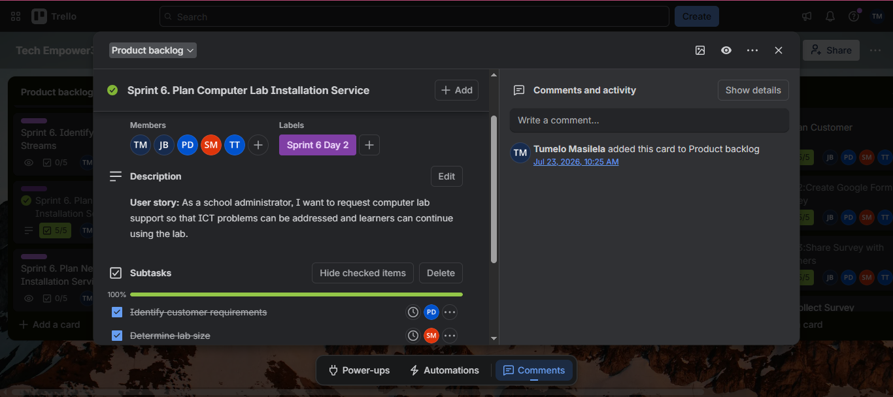
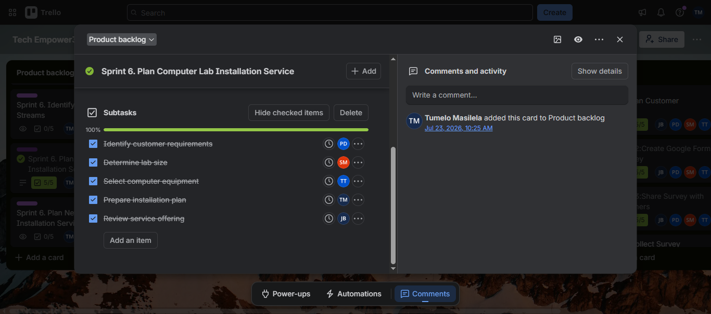
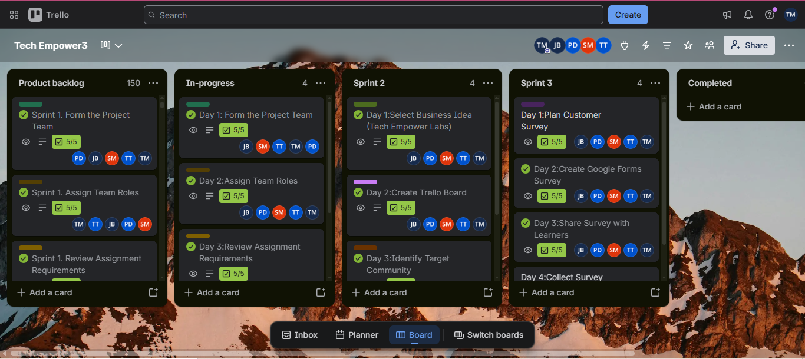

ASSESSMENT AREA 02
User Stories and Tasks
User needs and the tasks used to deliver them, recorded on our Trello board.
Evidence
These screenshots show the user stories and tasks recorded in our Trello board for Tech Empower Labs.
User Stories

Tasks and Checklists

Task Progress

My reflection
Creating user stories helped me understand how to describe project requirements from the user's perspective. Breaking each story into smaller tasks made the work easier to understand and plan.
This activity highlighted the importance of identifying user needs before deciding on a technical solution. I also learned that clear tasks help a team understand the work required and coordinate responsibilities.
In future projects, I would improve this process by confirming requirements with users, prioritising the stories according to their needs, and reviewing task progress regularly.